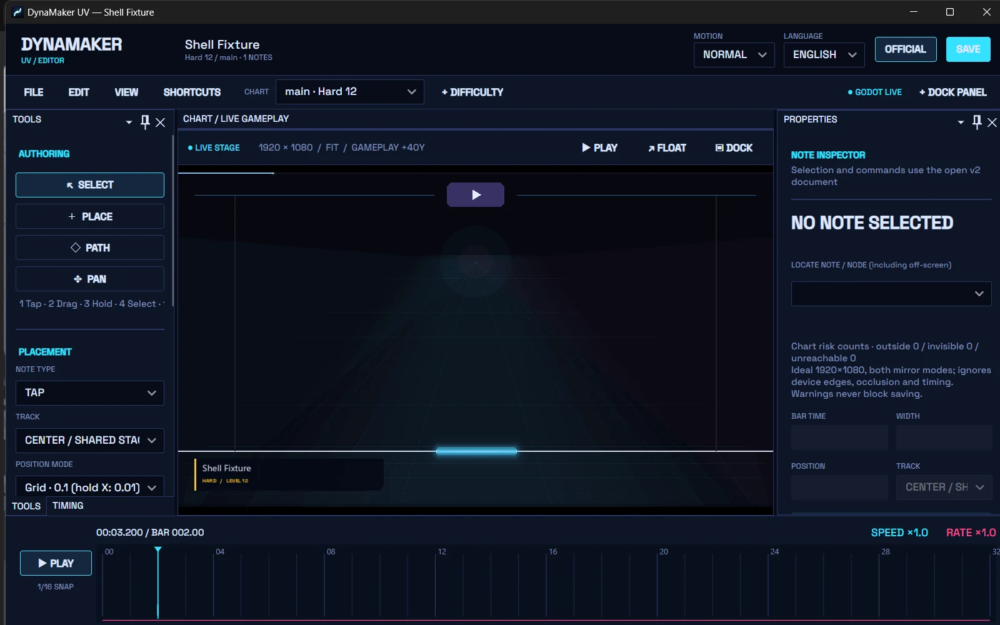

DYNAMAKER UV / BEGINNER'S GUIDE
Make your first chart
Place four notes on a 120 BPM click track and play them back to check the timing. Then add a bend to a two-beat hold, save your chart, and open it again.
The screenshots show a synthetic test chart in the DynaMaker UV workbench on Windows. Older versions of DynaMaker use different controls.
01 / GET READY
Get the editor and a practice track
- Unpack the Windows editor. Extract the entire package to a folder on your computer, then run
DynaMakerUV.exe. The EXE needs the files around it, so leave the extracted folder together and run it from outside the ZIP. - Pick an audio file you have permission to use. A short recording with a clear beat and a known BPM works well for the first exercise. Use WAV, MP3, Ogg Vorbis, or FLAC up to 64 MiB. The editor doesn't accept M4A, AAC, or Opus.
Check the GitHub releases page for an available package. If no download is published, use the source launch instructions instead. If your portable test build includes Uninstall.cmd, run it to remove the unmodified program files listed in its manifest. It leaves modified files, extra files, chart packages, and your preferences alone.
The practice click track
Download the 16-second practice track and save it where you can find it in the editor. It runs at 120 BPM, with a higher click on the first beat of every group of four. The clicks are synthesized; the file contains no vocals or audio from the original game.
Download practice audio · WAVPackages and difficulties
A package holds the song metadata, audio, and charts in one folder. Each difficulty is a separate chart; one package can hold several for the same song.
02 / YOUR WORKSPACE
Find your way around the workbench
From the start page, choose NEW PACKAGE (Ctrl+N) to follow the exercise, or OPEN PACKAGE (Ctrl+O) and select the folder for an existing chart package. The stage and editing panels appear once you create a draft or open a package. If an older test build opens straight to the workbench, Ctrl+N still starts a new package.
Set LANGUAGE to ENGLISH in the top bar to follow the menu names in this guide. Once a chart is open, click a note on the stage to see its properties on the right. The TOOLS and TIMING tabs share the dock on the left.

| Area | What it does |
|---|---|
| FILE | Create, open, save, and manage package and difficulty data. |
| TOOLS | Select, place, edit paths, pan, and choose note type, track, position mode, and width. |
| TIMING | Edit BPM and Scroll events for the current difficulty. |
| Live stage | Place, select, and drag notes. Play the chart to see them approach the three judgment lines. |
| PROPERTIES | Set exact values for the selected note or path node. |
| Transport bar | Play, pause, or drag the playhead. Read the current bar, time grid, fall speed, and music playback rate here. |
Use CHART to switch difficulties and SAVE to write the package. MOTION changes workbench animations (NORMAL, LITE, or MINIMAL); it does not change stage hit effects. OFFICIAL identifies the current theme. Click RESET LAYOUT to restore the stage and panels, or SHORTCUTS to look up a key. F1 opens and closes the shortcut guide.
Dock panels or float the stage
Hide a side panel or float the stage when you need more room. Neither action moves notes in the chart.
- Switch between TOOLS and TIMING.
Click the TOOLS or TIMING tab at the edge of the shared left dock. BPM and Scroll are under TIMING.
- Use the pin button.
Click the title-bar pin to collapse the whole panel to an edge tab. Collapsing a section like the Inspector's movement controls leaves the panel in place.
- Open an edge tab and pin it again.
Click the Tools, Timing, or Properties edge tab to open the panel. It may hide again when the pointer leaves. To keep it open, click the title-bar pin again.
- Resize from the divider.
Drag the divider between a dock and the stage to give a form more room. Dragging a tab or title changes the Dock layout. If labels are crowded, widen the panel or scroll inside it.
Float and restore the live stage
The stage has FLOAT and DOCK controls. You can also press Ctrl + Shift + F to float it and Ctrl + Shift + D to restore it. Closing the floating stage window docks it back into the workbench; it does not close the package. Press Ctrl + Shift + A or use + DOCK PANEL to add the AUDIO ANALYSIS panel.
Scroll inside a panel
Scroll inside the Inspector to reach path curves and note speed. In TIMING, switch to the BPM or SCROLL tab, then scroll within that page if needed. On the stage, the wheel moves the playhead.
The editor keeps your dock layout, language, grid, placement width, wheel direction, preview volume and effects, and UI motion settings between sessions. These preferences live under %LOCALAPPDATA%/DynaMakerUV/, outside your chart. Playback, playback rate, selection, and the note clipboard do not carry over.
Tools and placement settings
| Control | When to use it |
|---|---|
| SELECT | Edit notes already on the chart. Click to select, drag a body to move it, or drag an edge to resize it. |
| PLACE | Create notes. The note type, track, position mode, and width below it control the next placement. |
| PATH | Insert and drag nodes on an existing HOLD or MIXER. It does not create a new sustain by itself. |
| PAN | Move the view or scrub through the song without moving notes. Hold Shift while dragging to pan the view on both axes without scrubbing. |
| NOTE TYPE | Choose the next note type: TAP, DRAG, EX TAP, HOLD, MIXER, MINE, or BAR LINE. BAR LINE has no number key. Choose it here in PLACE or from the stage menu. |
| TRACK | Choose LEFT, CENTER, or RIGHT for placement. It also sets the track used by marquee selection; it does not move the selected note. |
| POSITION MODE | GRID moves the note center in steps of 0.1 and its width in steps of 0.05. FREE lets you set both between grid steps. Neither mode changes the note's time. |
| WIDTH | Sets the default width for new notes and remembers placement width changes. Edit an existing note's width in the Inspector. |
Time snap sets the placement grid. Read the grid in the transport, for example 1/4, 1/8, or 1/16 SNAP. Set the note's position and width with POSITION MODE. Hold X for 0.01 position and width steps. Hold Z to bypass time snapping temporarily; it does not switch position mode to FREE. Press B to reverse the mouse-wheel time direction and press it again to restore the default.
Use FILE to save. REVIEW and PACKAGE are visible, but neither is part of the current editing workflow. You can open the AUDIO ANALYSIS panel, but it doesn't show a waveform yet.
03 / A NEW PACKAGE
Create your first chart package
- Open NEW PACKAGE.
Choose FILE → NEW PACKAGE or press Ctrl + N.
- Fill in the song and resource fields.
Give the track a TITLE, credit the musician under ARTIST, and put the chart author under CHARTER. Choose the practice WAV in AUDIO. COVER is optional.
- Choose IDs and a difficulty.
Use a package ID such as
my-first-packand a chart ID such aseasy. Use up to 64 characters per ID. Start with an ASCII letter or digit; after that, dots, underscores, and hyphens are allowed too. The editor uses IDs to tell packages and charts apart. Players see the song title. Choose a DIFFICULTY such as CASUAL, then set LEVEL (1 to 99) or tick UNRATED. If you choose CUSTOM, enter a CUSTOM DIFFICULTY KEY. - Set the BPM and offset.
For the practice audio, set INITIAL BPM to 120. AUDIO OFFSET sets where chart bar 0 falls in the recording, in seconds. Use 0 for this file. Click
CREATE DRAFT. The default initial BPM is 150, so check this field.
CREATE DRAFT does not save the package
Until you save, the draft stays in memory. The first save copies in the audio and the cover, if you chose one. Place a scoring note, then press Ctrl + S. Do not move or delete the source audio before that save.
04 / PLACE YOUR FIRST NOTE
Place four taps on the beat
Pause playback. In TOOLS, click PLACE, set NOTE TYPE to TAP, and set TRACK to CENTER. You can also press 1 to select TAP placement. Set WIDTH to 1. Leave PLACE active for the next three steps.
- Set the time snap to 1/4.
Press C for a coarser grid or V for a finer one until the bottom bar reads
1/4 SNAP. In 4/4, a quarter of a bar is one beat. Use 1/8 for half-beat spacing. - Move over the center lane and read the ghost.
The ghost shows the note's bar time, position, and width. Guides mark the same time on the other tracks and help you match positions and widths. Move the playhead to bar
1on the bottom timeline. Aim for the ghost marked1on the center track. - Place the note with the left mouse button.
Hold the button down and drag if you want to change the width. Release to place the note; the editor keeps that width for the next one. If you place one by mistake, press Ctrl + Z.

Practice: place four beats
You now have a tap at bar 1. Place the next three at 1+1/4, 1+1/2, and 1+3/4, keeping all four the same width. If the next beat is off-screen, move the playhead forward after releasing the mouse. Bars count from 0, so these four taps land at 2, 2.5, 3, and 3.5 seconds.
Press R to go to the start, then Space to play. The higher click in the second group of four should meet your first tap. Listen to the next three beats as well. If a tap is off, select it and correct BAR TIME in the Inspector.
To change lanes, choose LEFT, CENTER, or RIGHT in the Tools panel, or press ↑ to cycle CENTER → LEFT → RIGHT. The note type is selected in the same panel.
| Type | How it plays |
|---|---|
| TAP / EX TAP | Press as the note reaches the line. A TAP can score Perfect, Great, Good, or Miss; an EX TAP gives Perfect inside its hit window and Miss outside it. |
| DRAG | A short note the player can catch with a touch already in motion. |
| HOLD / MIXER | Follow a hold along its path, or keep catching a mixer as it moves. See Hold and path editing for the two clicks that set their start and end. |
| MINE | A hazard: avoiding it earns a Perfect; triggering it during its danger window gives a Miss. |
| BAR LINE | A visual timing line with no judgment unit. It cannot replace a scoring note. |
Press C or V to decrease or increase snap density. Hold Shift with C or V to change the denominator by one step. Hold Z to free the time placement and X for finer position adjustment.
05 / EDITING NOTES
Select, move, and copy notes
Press 4 for SELECT. Drag a note by its body to move it. If you've selected a group, drag the body of any selected note to move the whole group. Drag an edge to change the width and center while the opposite edge stays put. For exact edits, enter a value in the Inspector and click the matching APPLY button.
- Multi-select: Shift-click notes to add them; Shift-click a selected note to remove it. To draw a selection box (a marquee), start the drag in empty space.
- Each marquee selects notes on the current track. Select the placement track in TOOLS or press ↑ first. During playback, start the box on an empty part of the stage and keep the mouse button down as the music advances. Release after the last beat you want. The box selects heads by center and bar time, so notes that have passed off-screen still count. For a hold or mixer, the box has to reach the center of the head. The body doesn't count.
- Extend a marquee: hold Shift to add to the existing selection. Click empty space to clear it. To add notes on a second track, switch tracks and Shift-drag another box. Seeking back during a drag shrinks the time range. Esc or right-click cancels the box and keeps your previous selection.
- Delete: select notes or a path node, then press Delete or Backspace. EDIT → DELETE NOTE does the same thing. Undo restores what you deleted.
- Copy a phrase: select all four taps at bar 1, press Ctrl + C, move the playhead to bar
2on the timeline, and press Ctrl + V. Or choose EDIT → COPY NOTES and EDIT → PASTE AT PLAYHEAD (SNAPPED). The earliest copy lands on the snapped playhead. The rest keep their spacing, tracks, positions, speeds, curves, and Hold judgment flags. Pasting selects the new notes; Undo removes the copies together.
The note clipboard
Copying a node copies its whole note, including the path. You can paste it into another difficulty or package in the same session. The note clipboard doesn't accept text, images, or JSON. In a text field, Ctrl+C and Ctrl+V still work on text. The editor doesn't cut notes, mirror them on paste, paste them to a designated track, or show a floating paste preview.
Use Ctrl + Z to undo and Ctrl + Y to redo. Both commands are also under EDIT. Save a copy before a large edit if you want an easy fallback.
Exact edits in the Inspector
The NOTE INSPECTOR shows fields for what you've selected. A hold head and a middle node have different fields. Some controls may be disabled if nothing is selected.
| Field / button | Meaning |
|---|---|
| LOCATE NOTE / NODE | Find a note or path node by ID and time, even when it's off-screen. |
| BAR TIME | The exact chart time of the note or node, not seconds. For example, 2+1/4 is one quarter of a bar after bar 2. |
| POSITION | The center along the track, measured in chart units. Values increase from left to right on the center track, and from bottom to top on both side tracks. |
| WIDTH | The total note width. It must be finite and greater than 0. At center 2.5 with width 1 the edges are at 2 and 3. Changing WIDTH alone here keeps the center fixed; dragging an edge on stage keeps the opposite edge fixed. |
| APPLY GEOMETRY | Commits BAR TIME, POSITION, and WIDTH as one undoable command. Exact inputs bypass the time and position grids. Apply the values before selecting something else. |
| NOTE TYPE and TRACK | Use APPLY TYPE / TRACK as a separate command. Converting a long note to a short type clears its path. Converting a short note to HOLD or MIXER creates a tail one grid step away by default. Multi-selection only allows the compatible TAP, DRAG, and EX TAP conversions. |
| NOTE SPEED MULTIPLIER | Multiplies the chart's Scroll and the player's fall speed without changing the hit time. The default is 1.0. Click APPLY SPEED to set it. |
| PATH CURVE / NEXT NODE | Changes the segment from the selected node to the next node. The last node has no next segment. |
| HOLD NODE JUDGEMENT | Controls whether a non-tail Hold node is judged. The tail is always judged. Apply it with APPLY NODE JUDGEMENT. |
Practice: put a tap at bar 2, beat 2
Choose the original tap at bar 1 and note its ID. Enter 2+1/4 in BAR TIME, 2.5 in POSITION, and 1 in WIDTH. Click APPLY GEOMETRY. It now shares a beat with a copied tap. Keep it selected, choose LEFT in TRACK, and click APPLY TYPE / TRACK. Use LOCATE NOTE / NODE to find it by ID and check the three numbers.
Undo twice: once to return the note to the center lane, once to restore its original time and geometry. You should still have four taps at bar 1 and four at bar 2.
Nudge a note or change its fall speed
Scroll the Inspector and expand NUDGE (TIME GRID / 0.1 POSITION). The time buttons move the selected note or group by one current snap step. The position buttons move it by 0.1. If a single node is selected, these buttons nudge that node. Changing a sustain head's time shifts the path times with it; changing only the head's center or width leaves the other nodes’ centers and widths alone.
To change how fast the selected notes fall, set NOTE SPEED MULTIPLIER (0.05 to 4, default 1.0), then click APPLY SPEED. For a sustain, the multiplier affects the whole path. Q and E change only your preview fall speed.
What the warnings check
The Inspector can warn when a note extends past the recommended range of 0 to 5, may be invisible at the judgment line, or may be outside the reachable touch area. It checks the nodes and some points between them in normal and mirrored layouts at 1920×1080. The check can't account for a particular device's edges, overlapping notes, or how far a player can move between beats. A path can be hard to follow even without a warning. The editor accepts positions outside the recommended range and won't block a save because of a warning.
Edit a group in the Inspector
Select several notes with Shift or a marquee and check the selection count. The Inspector shows GROUP TRANSFORM and SET PROPERTIES. Under GROUP TRANSFORM, a POSITION OFFSET of +0.2 shifts the group along each track in chart units, including every point of a Hold or Mixer. Undo this change before trying a time offset.
- Move the group one beat later with Time offset.
In common 4/4 time, choose Time offset, enter
1/4, and click APPLY TRANSFORM. The notes keep their original intervals. Apply-1/4to bring them back before the next exercise. - Move the first note to a chosen bar with Move selection start to.
Select the four taps you copied at bar 2. Enter
4and apply. Only the earliest note lands exactly on bar 4; the others follow at their original intervals. Undo the exercise so the phrase is back at bar 2. - Set widths or change them by a fixed amount.
SET TO
1makes every target the same width. ADD / SUBTRACT0.1changes each original width by the same amount. For a long note, choose HEADS ONLY or WHOLE PATHS. Whole-path setting can remove intentional width variation. - Leave other fields unchanged.
MIXED / UNCHANGED leaves a mixed track or type alone. Changing a track preserves chart coordinates and does not mirror the notes. Batch type conversion is limited to TAP, DRAG, and EX TAP. RESET INPUTS clears uncommitted fields; it is not undo.
The SELECTED OBJECTS list can locate an item in the group without shrinking the selection. Check the number of properties on the apply button before clicking. Each panel applies its changes in one undo step. If a value is invalid, the editor keeps the whole group unchanged so you can correct the input. Enter in a time or position input applies the transform; Enter in the width input applies the properties. Switching selection discards unapplied inputs. Undo any practice changes before continuing.
When changes reach disk
APPLY updates the chart in memory. Ctrl + Z undoes that applied command. Ctrl + S writes the current chart package to disk. An asterisk in the title means there are unsaved changes.
06 / HOLDS AND MIXERS
Place a hold or mixer
Choose HOLD with 3 or MIXER with 6. For either, place the head first, then click again to set the tail.
- Set the start and width.
Press the left mouse button at the start time. Drag if you need to set the width, then release. The head stays in place while you move the tail.
- Move to the end time and click again.
The tail must be later than the head. If both beats won't fit on screen together, lower the preview fall speed with Q (try ×0.5) before placing the head. Right-click cancels the draft. With the stage focused, Esc cancels it as well.
- Use PATH for a bend.
Switch to PATH and double-click the sustain body to insert a node. In PATH, you can drag a node or the head. SELECT also lets you drag one node at a time. Nodes must remain in order after the head, at distinct times. A right-click during an unfinished gesture cancels the gesture instead of opening the stage tools menu.

Choose a path curve
Select a path node and use PATH CURVE / NEXT NODE in the Inspector. LINEAR changes position and width evenly. The HOLD curve keeps their starting values until the next node. QUAD, CUBIC, and SINE each offer EASE IN (slow start), EASE OUT (slow finish), and EASE IN OUT (both). SMOOTH / PCHIP is a path option only. The curve controls the segment from the selected node to the next node. The editor draws extra points between nodes to render the curve. You can't select those points.
For a HOLD middle node, HOLD NODE JUDGEMENT controls whether that node participates in judgment. The tail always participates. A Mixer has no separate tail judgment.
To make the path swing past the next node and come back, try the custom easing exercise. Place the nodes you need first: you can't double-click to insert a node inside a segment while its curve is set to Custom.
- Choose the segment.
For a path with head → middle node → tail, select the head to edit the head-to-middle segment. Select the middle node to edit the middle-to-tail segment. The tail has no following segment.
- Apply the curve and listen.
Scroll to PATH CURVE / NEXT NODE, choose a curve, and click APPLY CURVE. Play the passage to see the difference on stage.
- Choose which middle nodes score.
For a HOLD middle node, change the checkbox and click APPLY NODE JUDGEMENT. To remove an intermediate node, select it and press Delete. Keep at least one tail node. Do not try to remove a node by changing its curve.
Practice: a two-beat HOLD
With the grid at 1/4, place a HOLD head at bar 3 and click again at 3+1/2. Play from just before bar 3; the head and tail should meet the line two clicks apart. Switch to PATH, insert a node at 3+1/4, and move it slightly sideways. Untick HOLD NODE JUDGEMENT on that node and apply: the bend remains, but that point no longer scores separately. Compare LINEAR with EASE OUT QUAD on the segment leading into the bend.
07 / TIMING
Set the tempo or change how notes move
If the notes land on the beat but move too fast, leave BPM alone and adjust Scroll or your preview speed.
| Setting | What it changes | Saved in the chart? |
|---|---|---|
| BPM | How chart bars map to audio time and how the beat grid is calculated. | Yes |
| SCROLL events | The chart's visual movement speed. They do not move a hit time. | Yes |
| NOTE NOTE SPEED MULTIPLIER | The visual speed of one selected note or group. | Yes |
| Q / E · preview fall speed | Makes notes move more slowly or quickly in your current preview. | No |
| W / S · playback rate | Changes music speed and the preview clock together. | No |
Change the initial BPM
In TIMING → BPM, select the event at bar 0, edit the BPM field, and click APPLY CHANGES. You can change its BPM, but you cannot move or delete the event. Keep it at 120 for the practice audio.
Add a BPM change when the music changes tempo
Enter the bar where the tempo changes and the new BPM, then click ADD. For bar time, use an integer, fraction, mixed number, or finite decimal. Examples in chart bars: 8, 1/4, or 8+1/4.
Change how fast the notes move
Use the SCROLL tab for a visual speed change. Once both ends of a transition are in the list, select the earlier event and set CURVE TO NEXT. The last event has no next target. If your list is empty, start with the bar 0 event in the exercise below.
Import timing from a chart you already have
Select the target difficulty, then choose PLUGINS → Import BPM and browse for a .mc or .osu file. Check the offset and tempo list, then choose Replace BPM timeline. This replaces only the selected difficulty's tempo and offset. Notes, Scroll, and audio files stay unchanged, but existing notes may land at different times in the audio. Use Ctrl+Z to restore both settings.
For osu! files, the editor reads only red timing points. It accepts versions v3 through v14 and v128. By default, a point less than 0.001 bars from a whole beat snaps if it moves by at most 1 ms. Clear the checkbox to turn off snapping. The osu! compatibility correction of +24 ms for v3/v4 still applies. Malody keeps its fractional beats; if the BGM offset is unclear, enter a value in milliseconds or choose Keep current offset. Check that the source chart and your difficulty use the same recording.
TIMING panel: add, change, and delete
With the stage focused, press ↓ once for dim center-lane bar guides, again for bright guides, and once more to hide them. ← and → control the side lanes independently; ↑ still switches the placement side. Numbers beside the lines are chart bars. The guides do not add Bar Line notes. In TIMING, choose BPM or SCROLL below CHART OFFSET. Each tab has a list and a separate editing area. Use + ADD above the list to create an event from the current inputs. APPLY CHANGES and DELETE in the editing area act on the selected row.
- Change an existing event.
Select a row. Its time and value appear in the inputs. Edit them and click APPLY CHANGES. Typing without applying leaves the event unchanged.
- Add an event.
Enter a new target time and value, then click ADD. A blank time uses the playhead, but an explicit time is safer for a first exercise. If an event already exists at that time, ADD shows an error and leaves the existing event alone.
- Delete an event.
Select the row, confirm its time, and click DELETE. Press Ctrl + Z if you remove the wrong event. You can delete extra events. Keep the initial BPM at bar 0.
Practice the BPM buttons
With the practice chart open, enter time 4 and BPM 150, then click ADD. Select the new row, change BPM to 100, and click APPLY CHANGES. Select that row and click DELETE. Check that the only remaining BPM row shows bar 0 and BPM 120.
The practice recording stays at 120 BPM throughout. Before you continue, make sure the initial BPM is 120 and delete any extra BPM events.
Practice a Scroll transition
Open the SCROLL tab. A chart without Scroll events uses the default ×1 speed. If the Scroll list is empty, first add a bar 0 event with value 1. Then add bar 2 with value 1 and bar 4 with value 2. Select the bar 2 row, set CURVE TO NEXT to LINEAR, and click APPLY CHANGES. Play from just before bar 2 and watch the Hold you placed at bar 3. The notes speed up between bars 2 and 4; the click track still runs at 120 BPM.
BPM must be positive; Scroll values must be greater than 0 and no more than 64. The first Scroll event stays at bar 0. You can delete it only when no later Scroll events remain. Keep these rows for the formula exercise below. When you're done, delete the rows at 4 and 2 to return to a constant ×1 at bar 0. For a stepped change, use HOLD instead of LINEAR on the earlier event. Scroll also accepts the Quad, Cubic, and Sine easing curves.
Write a custom easing formula
Use the Scroll events from the previous exercise: ×1 at bar 2 and ×2 at bar 4. Keep the values and change the formula to see how the speed at bar 3 changes.
- In TIMING → SCROLL, select bar 2. Choose “Custom…” under CURVE TO NEXT. If you select bar 4 instead, the control is disabled: there is no event after it.
- Enter
t^2in CURVE EXPRESSION, withoutf(t)=. The horizontal axis shows how much of the segment has elapsed in chart bars. The vertical axis shows progress from the starting value to the target. At bar 3, half the segment has elapsed, but0.5^2 = 0.25: the speed is ×1.25. Entertinstead for a straight line and the speed there would be ×1.5. - Click APPLY CHANGES in SCROLL and play from just before bar 2. The music and hit times stay the same. Now try
1 - (1-t)^1.5 * cos(3*pi*t). The graph highlights the part above 1. Apply and play again: the speed goes past ×2, swings back, then settles at ×2 at bar 4.
On a Hold or Mixer: select the head or a middle node, choose Custom… under PATH CURVE / NEXT NODE, enter the formula and click APPLY CURVE. The formula changes both center and width. To see the bounce clearly, keep the two widths equal and move the next point to one side. The Mixer's catch area follows that same path.
Writing a formula: use + - * / ^, parentheses, and the constants pi and e. Write multiplication explicitly: 2*t, not 2t. Functions include sin and cos (radians), sqrt, abs, exp, log (natural logarithm), min(a,b) and max(a,b).
If the formula is rejected: substitute 0 and 1 for t. The results must be 0 and 1 respectively, so t+1 won't work. Progress can go below 0 or above 1 in between. The actual width must stay positive and the actual Scroll speed must stay above 0 and at or below 64. If the formula divides by zero inside the segment or oscillates too quickly to represent accurately, change it before applying.
Typing updates only the graph. Even if you select another note or switch tabs, a pending formula must be applied or discarded before saving. Choose “Discard this formula draft” to keep the old curve. When saving a custom curve to a v2.0 pack for the first time, the editor asks to upgrade it to v2.1. To keep a copy that works in older versions, cancel and use Save As with a new folder. Anyone opening the new pack needs a game or editor that supports v2.1.
Offset or tempo?
If all the notes land early, leave the text field and press O to delay this difficulty by 10 ms. Use P to move it earlier, or hold Shift for 1 ms steps. Hold a key to keep adjusting; one Undo reverses that hold. For a known value, enter milliseconds under CHART OFFSET in TIMING and click APPLY OFFSET. For example, +100 ms here is +0.1 seconds in PACKAGE / DIFFICULTY SETTINGS. Other difficulties keep their timing. If the beginning lines up but the chart drifts further out of time, check BPM. Do not use Scroll or preview fall speed to correct an audio offset or tempo mismatch.
08 / PLAYBACK AND PREVIEW
Preview a passage
Press Space to play or pause, or use the transport button, the stage toolbar's PLAY button, or the large button at the top center of the stage. Click or drag along the timeline to seek to a grid position, or press A and D to move backward or forward by one second. Hold Shift with A or D for 0.01-second steps.
Press S to lower the music playback rate and W to raise it. Use Q and E to lower or raise preview fall speed. Q/E range from 0.1 to 2.0 in 0.1 steps; W/S range from 0.2 to 2.0 in 0.1 steps. These preview controls do not write chart data. Press R to return to the start. Restore both values to 1.0× before your final listen.
- Do the notes reach the judgment line with the beat, melody, or sound you meant to chart?
- Are the three tracks easy to read, with no accidental stacking that hides an important note?
- For each hold or mixer, check the head, turns, and tail against the music. Look for any nodes you added by mistake.
- After restoring normal speed, does the passage still sound like the rhythm you intended?
Right-click an empty part of the stage. Opening the menu leaves the track and volume alone. To change tracks, move the pointer over LEFT, CENTER, or RIGHT. To set preview volume, move along the volume row, from 0% on the left to 100% on the right. No click is needed for either control.
Click one of the seven note types to enter PLACE, or click SELECT, PATH, or a hit effect level (FULL by default, REDUCED, or OFF). The menu stays open after a choice. Volume and effects are editor preferences, not game settings. Press Tab or Shift+Tab to start keyboard navigation. Esc, another right-click, or a click outside closes the menu without placing a note. During an unfinished gesture, right-click cancels the gesture instead of opening the menu.
On the stage, the wheel normally moves forward in time when you scroll down. Press B to reverse it. Scrolling forward shows hits as notes cross the line; scrolling back restores them without replaying effects. Each wheel step moves a distance on screen, so the time it covers depends on Scroll and fall speed. Finish any drag or placement before scrolling. Scrolling while paused does not start the music. For a longer move, choose PAN and drag vertically to scrub through time or horizontally to shift the view. If music was playing, it resumes at the new time when you release. Hold Shift while panning to move the view on both axes without scrubbing.
What Auto preview can check
Use Auto preview to check timing and how the notes look. It won't simulate mistakes, write scores, or tell you if a player can reach the next note in time. Pausing freezes the current effects. Skipping, panning, or editing during playback does not replay hits from the skipped passage. Switching package, chart, or audio stops playback.
Export a chart video
You need a Windows editor build that includes the recording component. The recorder runs the selected difficulty in the game, including any edits you've applied but haven't saved. It leaves the package and scores alone and doesn't capture the editor window.
- Select a difficulty and choose FILE → Export Chart Video…
The editor searches your computer for a compatible copy of FFmpeg without downloading anything. If the search comes up empty, install FFmpeg with WinGet or click Locate FFmpeg… and select your existing
ffmpeg.exe. - Set the intro, ending, and note speed.
Set Song preview to no more than the selected difficulty's preview duration. Enter 0 to skip it. Hold rating on screen sets how long the rating stays up after the reveal. At 0, the full reveal still plays. Gameplay note speed ranges from 0.1× to 2.0× in steps of 0.1×. It defaults to 1.0× the first time; after that, the editor remembers the setting from the last export you started. It changes how fast notes move in the video, without changing the music, judgment, video length, or your game settings. The workbench's Q / E preview speed doesn't control it.
- Choose a new MP4 filename and click Start export.
The defaults are H.264 and Medium. You can also choose HEVC or AV1 if your FFmpeg build supports it. A separate game window opens for recording. The recorder puts music and effects straight into the 1920×1080, 60 fps MP4 and doesn't play them through the speakers. You can cancel the export. It won't overwrite an existing file.
09 / PACKAGES AND DIFFICULTIES
Save and reopen a chart package
- First save: Ctrl + S.
Choose a dedicated new folder for the song. Do not choose the Desktop, Downloads, or the editor folder itself. Each difficulty in the package must contain at least one scoring note, such as a tap. An empty draft is useful for preview, but it cannot be written as a complete strict package.
- Check the saved state.
Look for the saved folder path in the bottom status line. When the title's
*disappears, your latest edits are on disk. If you make another edit during the save, the newer change stays unsaved. Save again to write it to disk. - Back up and share the complete folder.
Copy the folder with its
meta.json, difficulty files, audio, and cover (if it has one). The editor may fail to open the package on another computer if any of its files are missing. - Open it again with Ctrl + O.
Choose the package directory, not a WAV, JSON, or ZIP file. Check the song title, switch difficulties, and play your four taps. To work on a copy, use Ctrl + Shift + S for SAVE AS and choose a different empty folder.
Keep the timing and start with no notes
Select the chart you've already timed and click + DIFFICULTY. The form opens inside the workbench. Give the new chart an unused ID, credit its author and pick a difficulty. For the same recording, keep the defaults: you get an empty chart with a copy of the whole BPM map and audio offset. Tick the Scroll option if you also want its visual speed changes. Editing the new map won't change the original.
Make a copy of a difficulty
Choose FILE → COPY CURRENT DIFFICULTY, then edit the copy. Its new ID distinguishes it from the original in the CHART selector. Check the selected ID before reordering or deleting a chart. FILE → MOVE DIFFICULTY UP / DOWN changes their order; FILE → DELETE CURRENT DIFFICULTY removes the selected chart and can be undone. The package must keep at least one difficulty.
In the same form, you can keep the package recording or browse for a different cut of the song. Choose whether to copy the timing or start a new map. If the old preview extends past the end of a shorter cut, tick the excerpt option and enter a start time and duration that fit. Click ADD DIFFICULTY to confirm. Cancel or press Esc to leave the pack alone; after adding a chart, Ctrl+Z removes it in one step. Place at least one scoring note before saving.
Package settings and media
Open FILE → PACKAGE / DIFFICULTY SETTINGS. The package fields apply to the whole song: PACK ID, TITLE, ARTIST, audio and cover, and the start and duration of the song-selection preview (in seconds). Under DIFFICULTY, edit the chart ID, JSON filename, difficulty, level, charter (separate multiple names with commas), or audio offset for the current chart. For an excerpt starting two seconds in and lasting four seconds, enter start 2 and duration 4. Tick the preview override to give just this difficulty its own excerpt. The audio override is independent: tick it and use REPLACE to choose audio just for this chart, or clear it to use the package recording.
Click APPLY SETTINGS to apply the changes, then click SAVE to write them to the package. You can play a replacement recording right away. Ctrl+Z does not undo audio or cover changes. Keep the original media and back up the whole folder before replacing either.
Save pending changes before using NEW PACKAGE or OPEN PACKAGE; the editor will keep the current chart open if it has unsaved work. When closing the main window, choose SAVE, DISCARD to close without those changes, or CANCEL to return to editing.
Package format and downloads
Open and save local strict v2 package folders. The Android game doesn't include the editor. Send people to the project's releases page for the Windows version. Don't share private test builds.
Make a square cover or a 16:9 video cover
Open or create a package, then choose TOOLS → EXTENSIONS → ＋ COVER STUDIO. Cover Studio starts with the package title, artist, charter credits, difficulties, and artwork. If you've picked a replacement cover, the window uses it even before you save the package. To use another still image, click Choose a local image… and pick a PNG, JPEG, or WebP. Closing the window discards the layout.
- Square cover: crop the original image.
Drag inside the frame to move it or drag the lower-right corner to resize it. Use the arrow keys to nudge it, with Shift for larger steps. Click Export square PNG. The file has the same pixel dimensions as the selected square in the original image.
- Video cover: frame the artwork, then arrange the badges.
Turn on Frame background to drag or zoom the artwork. At 100%, the artwork fills the canvas at its original proportions. The square crop stays where you left it. Turn framing off to drag individual diamonds. Use Center elements to choose which badges appear, edit Footer text, or toggle Show thin top bar. With Snap to guides on, badges snap to template axes and to the center lines and diagonal edges of other badges. Hold Alt to bypass snapping.
- Export the full cover or the overlay.
Export video PNG combines the artwork and layout in a 1920×1080 image. The preview's background color shows through any transparent parts of the artwork. Use Export transparent overlay to put the layout over another video. You don't need to select artwork for an overlay.
Choose a new filename outside the package, in a folder that isn't reached through a junction or symbolic link. Exporting won't overwrite an existing file or change the package. To use the square PNG in song selection, replace the cover under FILE → PACKAGE / DIFFICULTY SETTINGS, then save the package.
10 / KEYBOARD SHORTCUTS
Shortcuts worth knowing
Start with SPACE, 4, Ctrl + S, and Ctrl + Z. Press F1 whenever you need the in-app guide. Hover over the ⓘ next to a heading for more detail. You can also focus it with Tab, open it with Space, and close it with Esc. When you're editing a text field, numeric field, or combo box, single-key shortcuts stay with that control. In the workbench panels, Ctrl+S and Ctrl+Shift+S still save. In the Add Difficulty form, Ctrl+Enter confirms and Esc cancels; the background shortcuts are inactive.
| Keys | Action |
|---|---|
| Ctrl + N / O / S | NEW PACKAGE / OPEN PACKAGE / SAVE |
| Ctrl + Shift + S | SAVE AS |
| Ctrl + Z / Y | Undo / redo |
| Ctrl + C / V | Copy / paste selected parent notes at the snapped playhead |
| 1 / 2 / 3 | Place TAP / DRAG / HOLD |
| 4 | SELECT tool |
| 5 / 6 / 7 | Place EX TAP / MIXER / MINE |
| ↑ | Cycle track: CENTER → LEFT → RIGHT |
| C / V | Decrease / increase time-snap density |
| Shift + C / V | Decrease / increase the denominator by one (1 to 64, including thirds or fifths) |
| Hold Z / X | Free time placement / finer position and width steps |
| Space / R | Play or pause / return to chart start |
| A / D | Seek backward or forward 1 second; Shift makes it 0.01 second |
| Q / E | Decrease / increase preview fall speed, 0.1 to 2.0 |
| W / S | Increase / decrease playback rate, 0.2 to 2.0 |
| B | Reverse or restore mouse-wheel time navigation |
| Delete / Backspace | Delete selected notes or path nodes |
| Ctrl + Shift + F / D | Float / dock the live stage |
| Ctrl + Shift + A | Add the AUDIO ANALYSIS dock panel |
| F1 / Esc | Open the shortcut guide / close it or cancel an active gesture |
| No number key | Choose PATH or PAN in TOOLS. Choose BAR LINE from the type list or stage menu. |
11 / TROUBLESHOOTING
Troubleshooting and sharing
Why did the first save fail?
Check that the audio is still at the selected path and uses WAV, MP3, Ogg Vorbis, or FLAC. Check each difficulty for at least one scoring note, a final scoring point within the audio, and a preview interval that fits the recording. An empty chart or one containing only bar lines cannot be saved. Keep the window open; the in-memory edits are still there. If the error mentions a cleanup failure, check the destination: the new files may already be on disk.
Why does a HOLD keep following the pointer after one click?
The first release sets the head. The tail follows the pointer until you click at a later time. Right-click or press Esc to cancel the unfinished gesture.
Why don't the number keys or Space work?
Check whether the caret is still in a text box, numeric field, or combo box. Finish the edit, then use the visible tool or transport button. In a workbench panel you can still save with Ctrl+S or Ctrl+Shift+S. Close the Add Difficulty form before using either shortcut.
There are notes in the chart, but I cannot see them. What should I check?
Move the playhead near their time, check the selected track, and check whether PAN moved the view away from the note. A note can be off-screen, outside the recommended [0,5] region, or hidden at the judgment rail. Use LOCATE NOTE / NODE in the Inspector and read its risk warnings before placing a duplicate.
Why is the music silent, or out of time?
Right-click empty stage space and check PREVIEW MUSIC volume, then check whether the current difficulty uses its own audio override. Click Play: moving the playhead alone does not start the music. If the beat is out of sync, restore RATE ×1.0 and check offset and tempo separately.
Can I open a ZIP package directly?
No. If the ZIP contains a complete strict v2 package, extract it first, then open the folder containing the package metadata, charts, and audio.
Where are the waveform, Storyboard, and object-snapping controls?
The Audio Analysis panel doesn't draw a real waveform yet, and there is no Storyboard editor. For existing timing, use PLUGINS → Import BPM. The workbench has no full gameplay HUD switch or public plugin installer. For footage from the game, see Export a chart video. Object snapping is off and its control is hidden. Placement guides show alignment without snapping notes together. You can still use time snap, Grid or Free position mode, and X for finer adjustments.
Can I undo an audio replacement after saving?
Undo may not bring back the old recording or cover after you've saved. Before replacing media, use SAVE AS or copy the complete package, and keep the original file.
What should I include in a bug report?
Record the editor version, the exact operation, the complete error message, and whether the problem is reproducible. A screenshot can help. Before sharing a package, confirm that its audio and cover are licensed for sharing and that its paths contain no private information. Open an issue on GitHub Issues.
What may I publish?
DynaMaker UV is a community-built editor, independent of the original game. Before sharing your chart folder, check that you can distribute every recording, image, and chart in it. Keep original-game and reference-project materials, including internal test charts, out of public releases. The repository has no project-wide license granting redistribution. Its third-party notices identify third-party works; public access alone does not grant permission.
YOUR NEXT BAR
Write your own beat at bar 4
Try a left-lane tap on the higher click at bar 4. Keep the next three beats on the center lane, or leave one silent. Play from the Hold at bar 3 and check whether there's time to reach the side lane. Save your chart, reopen the folder with Ctrl+O, and play the passage once more to check that the notes and audio are both there.
Back to the placement exercise ↑